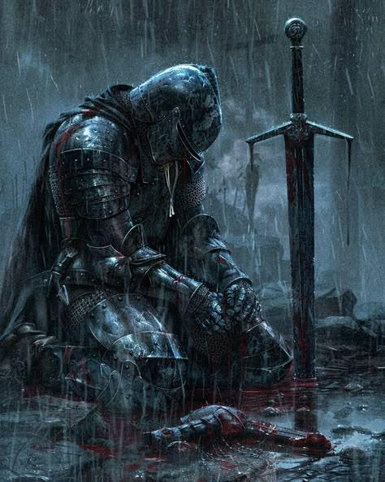

Tu dégaines ton épée et attaques le premier brigand. Tu réussis à le désarmer, mais les trois autres se jettent sur toi. Malgré ton courage, tu es rapidement dépassé. Une lame te frappe dans le dos et tu t'effondres.
Les brigands s'emparent de tes affaires et abandonnent ton corps dans la forêt. Le parchemin ne sera jamais retrouvé et les ennemis du roi pourront désormais préparer leur invasion.
Fin tragique
Tu as perdu. Ta bravoure n'aura pas suffi à sauver le royaume.